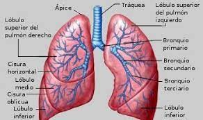

| Características de los Pulmones | |
| Los pulmones son un par de órganos esponjosos de color gris rosáceo que se encuentran en el pecho. Al inhalar, el aire ingresa a los pulmones y el oxígeno de ese aire pasa a la sangre. Al mismo tiempo, el dióxido de carbono, un gas de desecho, sale de la sangre a los pulmones y es exhalado. |  |